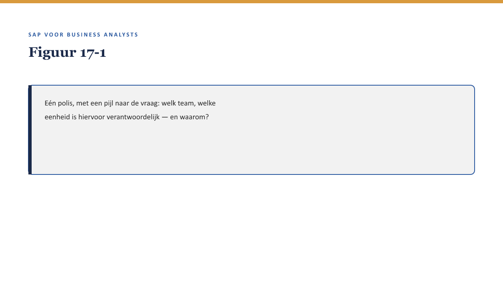
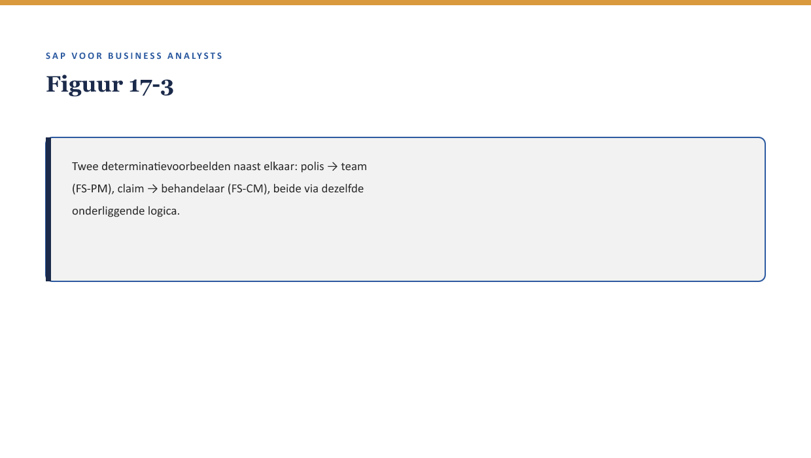

Deel 17 — Organisatiestructuur & determinatie
Reader · Niveau 2 Professional · Cursus SAP voor Business Analysts · Ductus
Leerdoelen
Na dit deel kun je:
- uitleggen hoe SAP organisatiestructuur vastlegt: de eenheden waarlangs een organisatie zich in het systeem herkent;
- het begrip determinatie toepassen: hoe het systeem, op basis van kenmerken, bepaalt welke organisatie-eenheid, welke regel of welke rol geldt;
- determinatie toepassen op zowel FS-PM als FS-CM, met account determination (↗ deel 15) als bekend voorbeeld;
- beoordelen wanneer een organisatiewijziging (bijvoorbeeld een reorganisatie bij Meridiaan zelf) determinatieregels raakt;
- een determinatievraag stellen die een onverwacht resultaat verklaart.
Studielast: één dagdeel klassikaal, circa drie uur zelfstudie.
1. Wie is verantwoordelijk voor deze polis?
Meridiaan reorganiseert intern: de afdeling die grote collectieve regelingen behandelt, wordt gesplitst in twee teams naar regio. Sanne krijgt de vraag of dit gevolgen heeft voor hoe FS-PM een polis toewijst aan een verantwoordelijk team. Priya’s antwoord: “Dat hangt af van je determinatieregels — en die moeten we nu samen doorlopen.”

2. Waarom dit voor de BA telt
Waarom dit voor de BA telt. Organisatiestructuur en determinatie zijn minder zichtbaar dan een BTX of een claim, maar bepalen achter de schermen welke regels, rollen en verantwoordelijkheden bij een specifieke situatie horen. Een reorganisatie die niet wordt vertaald naar de juiste determinatieregels, laat het systeem stilletjes verouderde toewijzingen aanhouden.
3. Organisatiestructuur: de eenheden waarlangs SAP een organisatie herkent
SAP legt een organisatie vast als een hiërarchie van organisatie-eenheden — bijvoorbeeld een indeling naar regio, productlijn, of afdeling, afhankelijk van hoe de implementatie is ingericht. Dit is, net als het modulelandschap uit deel 1, een concept: elke SAP-klant richt zijn eigen organisatiestructuur in, passend bij de eigen indeling — de precieze eenheden bij Meridiaan zijn een implementatiedetail.
4. Determinatie: hoe het systeem een keuze maakt
Determinatie is het mechanisme waarmee het systeem, op basis van kenmerken van een transactie of polis, automatisch een organisatie-eenheid, regel of rol toewijst — hetzelfde principe als account determination (↗ deel 15 §5), nu breder toegepast dan alleen op grootboekrekeningen.
Kernzin — Account determination (deel 15) was al een voorbeeld van determinatie. Dit deel generaliseert dat principe: overal waar het systeem “automatisch kiest op basis van kenmerken,” is er sprake van een determinatieregel — en elke determinatieregel is een bedrijfsregel (↗ deel 5-6) die ergens is vastgelegd en die bevraagbaar is.
5. Determinatie bij FS-PM en FS-CM
Bij FS-PM bepaalt determinatie bijvoorbeeld welk team verantwoordelijk is voor een polis, op basis van kenmerken zoals productvariant of regio. Bij FS-CM bepaalt determinatie bijvoorbeeld welke schadebehandelaar of welk team een claim krijgt toegewezen, op basis van claimtype of omvang.

6. Reorganisatie en determinatie: wat er kan misgaan
Terug naar §1. Als de nieuwe regio-indeling niet wordt vertaald naar bijgewerkte determinatieregels, blijft het systeem polissen toewijzen volgens de oude indeling — zonder foutmelding, want het systeem “werkt” gewoon, alleen met verouderde regels. Dit is exact het patroon uit deel 4 §5 (stamgegevensfouten die stil blijven totdat iemand ernaar zoekt), nu toegepast op organisatorische in plaats van relationele gegevens.
Kernzin — Een reorganisatie is pas compleet als de determinatieregels zijn bijgewerkt. Een organisatiewijziging die alleen op papier of in het personeelssysteem wordt doorgevoerd, laat het systeem stilletjes de oude werkelijkheid aanhouden.
7. Een determinatievraag stellen
Wanneer een collega meldt “deze polis is naar het verkeerde team gegaan,” is de vraag niet “waarom werkt het systeem niet” maar: “Welke kenmerken van deze polis bepalen de teamtoewijzing, en zijn die kenmerken sinds de reorganisatie nog actueel?” — een toepassing van de vaardigheid uit deel 3 §5.1 en deel 4 §7, nu op determinatieregels.
8. Kruisverwijzingen
- ↗ Deel 15 §5: account determination als het eerste, al bekende voorbeeld van determinatie.
- ↗ Deel 4: het patroon van stille, onopgemerkte fouten, hier toegepast op organisatorische gegevens.
- ↗ Deel 18: status, berichten & output — waar determinatie ook bepaalt wie welke notificatie ontvangt.
Kernbegrippen
organisatie-eenheid · organisatiehiërarchie · determinatie · determinatieregel
Samenvatting in vijf zinnen
- Organisatiestructuur legt vast welke eenheden een SAP-implementatie herkent — een concept dat elke klant naar eigen inzicht invult.
- Determinatie is het mechanisme waarmee het systeem automatisch kiest op basis van kenmerken — account determination (deel 15) was al een voorbeeld.
- Bij FS-PM bepaalt determinatie bijvoorbeeld teamverantwoordelijkheid; bij FS-CM bijvoorbeeld behandelaarstoewijzing.
- Een reorganisatie die niet in determinatieregels wordt bijgewerkt, laat het systeem stilletjes verouderde toewijzingen aanhouden.
- Een determinatievraag (“welke kenmerken bepalen dit, en zijn ze nog actueel”) is de sleutel om een onverwacht resultaat te verklaren.